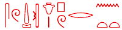

|
News and Gossip |
 |
21 December 2004 |
4 December 2004 |
SCA commercial armAn interesting article in Al-Ahram Weekly talks about new initiatives to market the SCA and the monuments of Egypt. http://weekly.ahram.org.eg/2004/721/eg11.htm Spotted by Charles Jones of the ANE list |
New course at UCL
Further enquiries to d.wengrow@ucl.ac.uk David Wengrow |
1 December 2004 |
|
Apologies for little news entered here recently. Here are a number of interesting stories spotted by the Cyberscribe. The Valley of the Kings, and king Tut http://www.guardian.co.uk/international/story/0,,1351182,00.html Various sources report research on early Arab sources by Okasha ed-Daly http://www.cnn.com/2004/WORLD/meast/02/22/egypt.hieroglyphs.reut/ http://observer.guardian.co.uk/uk_news/story/0,6903,1318435,00.html |
Suggestion for relocating the temple of Esna http://weekly.ahram.org.eg/2004/712/hr1.htm There is an on-going dispute about drilling in the pyramids http://weekly.ahram.org.eg/2004/712/hr2.htm 13th dynasty coffin in Luxor http://www.iol.co.za/index.php?set_id=1&click_id=588&art_id=qw1100012580513B221 http://www.arabicnews.com/ansub/Daily/Day/041110/2004111028.html http://www.cronica.com.mx/nota.php?idc=152291 (in Spanish, with picture) |
31 August 2004 |
|
Theft of books from UppsalaI gather that a book dealer is under arrest for selling library books from the Uppsala area and elsewhere. Follow this link to read the appeal for information by Lana Troy. |
Programme to catalogue Cairo Museum basementThis story caught my eye: http://abcnews.go.com/wire/SciTech/reuters20040606_169.html/ |
21 August 2004 |
19 July 2004 |
AkhmimVarious sources have recently mentioned the discovery of further parts of statues etc at Akhmim. The best is in al-Ahram Weekly: |
Lech KrzyzaniakNews has come from Poland of the death on 10th July 2004 of Professor Lech Krzyzaniak, director of the Poznan Archaeological Museum. He wasa specialist in the prehistory of Egypt. More information will be found about him on the Museum's web site. |
9 June 2004 |
9 June 2004 |
J Gwyn GriffithsNews has come of the death of J Gwyn Grifffiths, who was Professor of Classics and Egyptology at the University of Swansea, 1973-79. As well as his work in that area, he was also well-known in Welsh literary circles. There is an obituary in the Independent: http://news.independent.co.uk/people/obituaries/story.jsp?story=532614 |
Programme to catalogue Cairo Museum basementThis story caught my eye: http://abcnews.go.com/wire/SciTech/reuters20040606_169.html/ |
9 June 2004 |
9 June 2004 |
Article on modern QurnaIn al-Ahram Weekly, about the modern village and a new exhibition. |
A retrospect on the Nubian campaignsIn al-Ahram Weekly. |
27 April 2004 |
27 April 2004 |
New tri-lingual decree?Reports are appearing of a tri-lingual decree of Ptolemy III from the Delta (perhaps like the Rosetta Stone): http://tinyurl.com/2aawf |
Late Period tomb at SaqqaraA Reuter's report indicates that a multi-chambered tomb has been found at Saqqara containing undisturbed burials from the 26th dynasty to the Ptolemaic period. http://msnbc.msn.com/id/4837894. Further reports added 28 April: http://tinyurl.com/2k5hp |
7 April 2004 |
8 April 2004 |
Dealer returns antiquitiesA story in the New York Times indicates that Phoenix Ancient Art, of Geneva and New York, has returned two stelae to Egypt which were looted from Akhmim in the early 1990s. These objects were the centre of a very interesting article on antiquities theft in the NYT earlier in the year. http://www.nytimes.com/2004/04/02/arts/design/02MONU.html2222222222222 Reminder: the NYT web site is subscription-only. |
Miriam LichtheimApologies for bringing news of another passing. Stefan Wimmer reports from Israel that Miriam Lichtheim died there at the end of March. Lichtheim will be well known to many readers as the author of Ancient Egyptian Literature, a three volume set of translations of Egyptian texts ranging from the Old Kingdom to the Roman Period. In more recent years she produced a number of studies of biographical texts; her own autobiography was published in 1999. |
7 April 2004 |
10 March 2004 |
Drawing board from ThebesStories about fragments from a drawing board found in excavations in TT11 in Luxor have appeared: http://msnbc.msn.com/id/4648930/ |
Frank Yurco and Arne EggebrechtI apologise that things have been quiet for too long. Now I must bring news of the passing of two Egyptologists. Frank Yurco was an Egyptologist in Chicago. Over the past few years he was quite prominent in online Egyptological issues, so many readers may have come across him. Arne Eggebrecht was a great public advocate for Egyptology in Germany. He was for many years director of the Roemer-Pelizaeus Museum in Hildesheim. There he was responsible for many important exhibitions. He was also instrumental in the museum getting involved in excavations at Tell ed-Daba in Egypt. |
|
News from October 2003 to end 2003 News from April to September 2002 News from October 2001 to March 2002 News from May 2000 to September 2001 News from January to April 2000 News from April to December 1999 appears |
News from October 1998 to March 1999 News from October 1997 to July 1998 News from July to October 1997 News from April to December 1996 News from April 1995 to March 1996 |